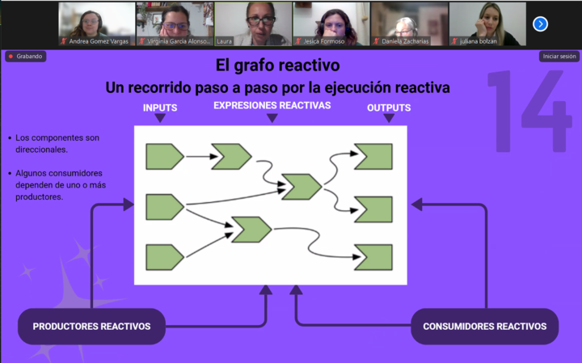
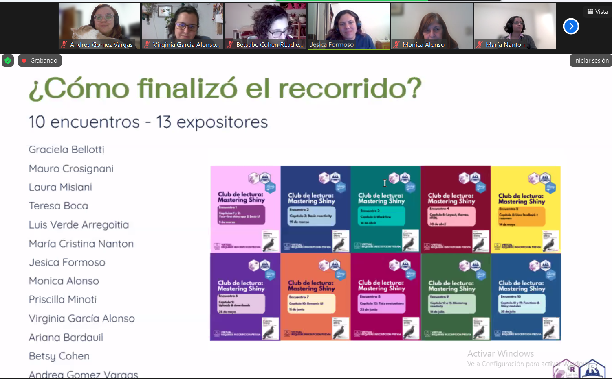

Aprendiendo Shiny en comunidad: un club de lectura colaborativo sobre Mastering Shiny en Buenos Aires

¿Alguna vez quisiste leer Mastering Shiny pero lo fuiste postergando para “cuando se calmen las cosas”? ¡Nosotros también! En R-Ladies Buenos Aires y R en Buenos Aires, muchas de nosotras teníamos Mastering Shiny guardado en nuestros estantes virtuales, siempre esperando el momento indicado. Después de meses (bueno, quizás años) de buenas intenciones y ningún avance, nos dimos cuenta de que necesitábamos un empujón, y ese empujón llegó gracias al poder de la comunidad.
De las intenciones individuales al aprendizaje colectivo
Hay un proverbio africano que dice Si quieres ir rápido, ve solo. Si quieres llegar lejos, ve acompañado. Decidimos transformar las intenciones individuales en aprendizaje colectivo. En lugar de intentar leer el libro por nuestra cuenta, organizamos un club de lectura comunitario, donde pudiéramos apoyarnos mutuamente, compartir nuestras dudas y celebrar nuestros avances.
Nuestros objetivos eran sencillos: crear un entorno amigable y acogedor para aprender Shiny, dividir el libro en partes manejables, y dar espacio a todas las personas, independientemente de su experiencia, para aprender y liderar.
Cómo organizamos el club de lectura


Organizamos el club en torno a diez encuentros, que tuvieron lugar entre marzo y julio. Aunque inicialmente planeamos leer el libro completo, decidimos que una versión más breve y acotada en el tiempo sería más realista y sostenible tanto para el equipo organizador como para los participantes. Comenzamos a planificar y organizar esta actividad a gran escala en septiembre de 2024.
Todas las sesiones fueron virtuales, con una duración de entre 60 y 90 minutos. Cada una fue coordinada por una persona diferente (o una dupla), quien nos guió por los contenidos y ejercicios de los capítulos asignados.
No se esperaba que nadie fuera experto. De hecho, alentamos explícitamente a personas con poca o ninguna experiencia previa en Shiny a participar y a liderar (¡y lo hicieron!). La única pauta era leer los capítulos, intentar los ejercicios y venir dispuestos a compartir. Las personas presentadoras explicaban lo que habían entendido de los capítulos, destacaban los conceptos clave y nos guiaban a través de los ejercicios. ¡Luego ocurría la magia! Entre todos completábamos los vacíos, hacíamos preguntas, proponíamos alternativas y aprendíamos unos de otros.
La mayoría de las personas presentadoras crearon diapositivas o notebooks para guiar sus sesiones (aunque esto no era obligatorio). Reunimos todos esos materiales en este repositorio público de GitHub.
Deliberadamente evitamos imponer un formato específico, ya que no queríamos que las barreras técnicas impidieran a nadie compartir. A futuro, planeamos curar y organizar los materiales para facilitar su reutilización, especialmente para hispanohablantes. Creemos que hay un valor real en contar con materiales de aprendizaje construidos por la comunidad en español.
Con el tiempo, los participantes comenzaron a compartir las aplicaciones Shiny que estaban desarrollando por su cuenta. Incorporamos una pequeña sección de “Muestra y Cuéntanos” al comienzo de algunos encuentros, donde las personas presentaban sus trabajos en progreso y recibían retroalimentación y aliento.
Fue un espacio lleno de apoyo mutuo, curiosidad y aprendizaje honesto.

Aunque grabamos las sesiones, decidimos hacerlas accesibles únicamente a quienes asistieron. Esto fue diferente a la práctica habitual de nuestros eventos, pero queríamos mantener las sesiones informales, cómodas y sin presión, más parecidas a un grupo de estudio que a un taller. Esto permitió que todos se sintieran seguros al compartir trabajos incompletos, hacer preguntas y cometer errores.
Reflexiones y lecciones aprendidas
A lo largo de los encuentros, distintas personas se ofrecieron como voluntarias para coordinar. Entre ellas había académicos y profesionales de la industria con diversas trayectorias y niveles de experiencia en R. Cada persona voluntaria aportó su propio estilo y perspectiva, y todos hicieron un trabajo fantástico. Aunque un pequeño grupo de personas participó en la mayoría de las sesiones, muchos otros se sumaron según sus intereses o disponibilidad.
Nos sorprendió contar con nuevos integrantes de la comunidad que aprovecharon el formato virtual para unirse desde otros países y ciudades de Argentina. Esto nos permitió derribar las barreras de la presencia física y debatir temas de interés desde distintas áreas profesionales, en español.
De cara al futuro, una idea para una próxima edición es organizar las sesiones en torno a la construcción de una única aplicación Shiny de forma colectiva. Creemos que esto podría sostener mejor el compromiso, hacer el aprendizaje más tangible y dar a los participantes la oportunidad de ver en la práctica cómo se conectan los conceptos del libro.
Uno de los aspectos más gratificantes del club de lectura fue escuchar lo que los participantes se llevaron de la experiencia. Más allá de Shiny en sí, las personas destacaron la alegría de aprender juntas, la responsabilidad de los encuentros periódicos y la calidez de la comunidad. Al finalizar el club, varios participantes se fueron motivados y pensando en estrategias para mejorar su trabajo creando una aplicación Shiny o explorando un tema para dar sus primeros pasos con un dashboard. Algunas de sus reflexiones:
“El formato de reunirse para analizar los capítulos de un libro con contenido técnico me pareció brillante. Abre un espacio de aprendizaje horizontal muy enriquecedor.”
— Graciela Bellotti
“Me gustó mucho que todos compartieran todo sin guardarse nada y explicaran lo que habían entendido, ya sea por experiencia previa o por su propia investigación sobre el contenido del capítulo. Lo hicieron muy ameno y no tan pesado, así que pude asistir a todas las sesiones.”
— Daniela Zacharías
“¡Muchísimo! No solo todo lo relacionado con Shiny, sino también la alegría de compartir estos encuentros con personas tan increíbles, tanto presentando como intercambiando dudas o conocimientos.”
— Laura Misiani
Este club de lectura no fue solo recorrer un libro técnico. Fue abrirse un espacio para aprender, ganar confianza, construir aplicaciones (¡y comunidad!), y demostrar que no hace falta saberlo todo para liderar o participar. Si vos también tenías pendiente leer Mastering Shiny, quizás esta sea tu señal para reunir a tu grupo y empezar juntos. Porque cuando aprendemos en comunidad, llegamos más lejos y nos divertimos más en el camino 😉.
Este posteo lo publicamos inicialmente en inglés en RConsortium. Podés encontrar la versión original aquí: https://r-consortium.org/posts/learning-shiny-together-a-collaborative-reading-club-around-mastering-shiny-in-buenos-aires/
Jesica Formoso
Docente e investigadora.
Andrea Gómez Vargas
Socióloga & analista de datos